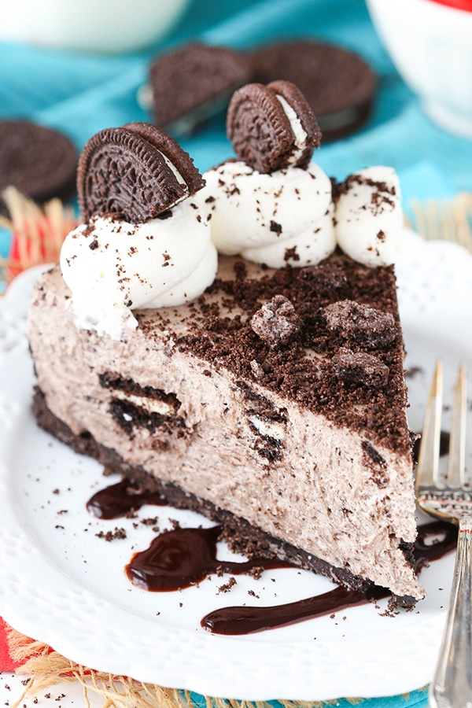

Nama saya Anifa Pradanti, biasanya saya dipanggil Anifa. Tetapi ada beberapa orang yang memanggil saya ipeh.
Saya lahir di kota Tegal tepatnya pada tanggal 18 juni tahun 2002. Saya lahir pada siang hari, karena saya lahir di tanggal 18 juni, zodiak saya gemini.
Sekarang saya tinggal di salah satu perumahan di Bojonggede yaitu di Ambar Waringin Elok. Jika kalian ingin berkunjung rumahku berada di blok E12 no.5 Rt12/08.
Hobiku adalah membaca novel, jika sedang bosan aku biasanya membaca novel. Penulis kesukaanku yaitu Tere Liye. Setiap buku yang ia terbitkan sangat menarik dan bagus. Salah satu buku nya yaitu Hujan. Buku itu menceritakan perjuangan seorang anak perempuan di tengah bencana alam yang menerpa negaranya. Dibuku itu memberi pelajaran jika semua kenangan yang kita miliki, baik kenangan manis maupun pahit harus tetap dijaga. Jadikan kenangan pahit tersebut pelajaran hidup kita, jangan coba menghilangkan kenangan pahit tersebut.
Karena hobi saya membaca buku, saya ingin sekali membaca buku di perpustakaan umum kota Stockholm di Swedia. Perpustakaan umum di Kota Stockholm ini dirancang oleh arsitektur Swedia, Gunnar Asplund. Gunnar dikenal akan karya arsitekturnya di Skandia Cinema dan UNESCO World Heritage. Perpustakan luar biasa ini menyimpan ratusan ribu bahkan jutaan buku dan literatur yang. Dengan bangunan bergaya Scandinavia, langit-langit perpustakaan ini dibentuk seperti awan.

Setiap orang pasti memiliki idola, saya mengidolakan salah satu penyanyi musik pop barat yaitu Shawn Mendes. Shawn Peter Raul Mendes lahir 8 Agustus 1998 adalah seorang penyanyi dan penulis lagu berkebangsaan Kanada.Mendes mendapatkan pengikut pada tahun 2013, setelah mengunggah cover lagu di aplikasi berbagi video Vine. Ditahun berikutnya, dia menarik perhatian manajer artis Andrew Gertler dan A&R dari Island Records bernama Ziggy Chareton, yang membuatnya dikontrak di perusahaan rekaman ini. Dia telah merilis tiga album studio, mengadakan tiga tur dunia, dan menerima beberapa nominasi dan penghargaan.

Saya suka makanan yang manis seperti cokelat, kue, roti, permen. Kue yang paling saya suka adalah kue buatan mamah ku. Untuk makanan beratnya saya suka makanan seperti bakso, nasi goreng, dan pizza. Tetapi dari semua makanan saya tidak terlalu suka sayuran. Karena bagi saya sayuran itu bau nya mengganggu.
Sekian biodata saya, terimakasih sudah melihat-lihat. Sampai jumpa.